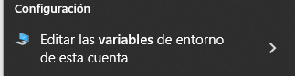
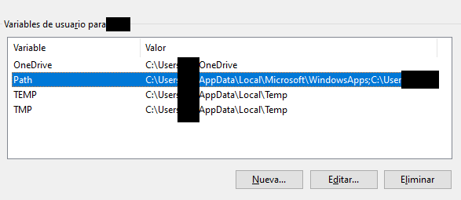
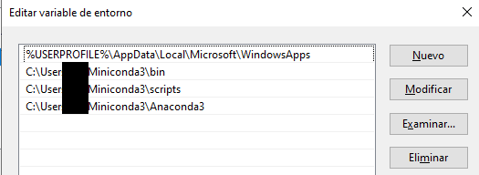

🐍 Conda: Contorno BigData
Este contorno permite facer os exercicios da clase. Imos instalar algunhas librarías básicas, o jupyterlab (para os notebook) e configurar o Visual Studio Code (vscode/code) por comodidade.
Pasos:
- Baixa miniconda https://docs.conda.io/projects/miniconda/en/latest/ e instálao no teu equipo.
- (Opcional) Mete miniconda no PATH de Microsoft Windows. O instalador di que pode dar problemas, pero é só se temos configuracións previas que empreguen Python e nalgúns casos moi especiais (mira os pasos abaixo).
-
Actualiza tódolos paquetes do contorno base para que non dea problemas:
conda update --all -
Borra o contorno bigdata anterior:
conda env remove -n bigdata -
Crea o novo contorno bigdata e actívao:
conda create -n bigdata python=3.10 conda activate bigdata -
Instala os paquetes mínimos que imos precisar
conda install -c conda-forge jupyterlab ipykernel ipython \ nbconvert pandas numpy pyarrow fastparquet wordcloud nltk \ pymysql ipython-sql sqlalchemy selenium requests beautifulsoup4
Engadir miniconda ao PATH
GNU/Linux
O instalador ofrécenos por defecto inicializar conda e metela no PATH, deberíamos optar por esta opción.
Se non o fixemos e non queremos executar de novo o instalador coa opción -u, entón podemos engadir ao final do .bashrc (considerando que ocnda estea instalado na ruta por defecto e a nivel usuario):
export PATH=$PATH:$HOME/miniconda3
Microsoft Windows
O instalador tamén ofrece a posibilidade de meter conda no PATH pero o desaconsella, se non o fixeches (non é unha opción por defecto) entón, pódelo meter manualmente como se indica a continuación.
Menú inicio -> Editar las variables de entorno de esta cuenta


Premer en "Editar..."

Logo en "Nuevo" e engadir unha entrada por liña
Mirar cal das dúas aplica (mira os directorios e busca onde tes conda instalado)
%USERPROFILE%\AppData\Local\miniconda3\condabin
%USERPROFILE%\Miniconda3\bin
Configurar Visual Studio Code (vscode) con conda e jupyterlab
Instalar plugin de jupyterlab
Selecciona na roda de configuración (abaixo, esquerda) a opción "Extensiones".
Busca "Jupyter" do autor "Microsoft" e instálao.
Configurar a ruta base de conda
- Vai á roda de configuración e selecciona configuración (En GNU/Linux: Ctrl+,).
- Busca
conda path. - No cadro pon a ruta ao executable de conda (conda.bat en Microsoft Windows)
/home/USUARIO/miniconda3/bin/conda
Configurar a terminal
- Abre o code.
-
Abre unha terminal (En GNU/Linux: Ctrl+Shift+`, en Microsoft Windows: Ctrl+ñ) e escribir o comando (en Windows podemos especificar tamén powershell ao final):
conda init -
Pecha tódolos terminais e xa podes abrir un que será inicializado no contorno base.